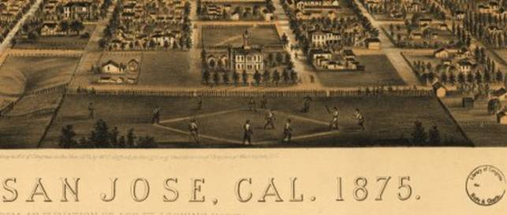

California
> San Jose (1875)
City of San Jose, Cal. 1875. C. B. Gifford, delt. A.L. Bancroft & Co. Lith.
Gifford, Charles B.

Published
San Jose W. C. Gifford, 1875.
Notes
Perspective map not drawn to scale.
Bird's-eye-view.
"From elevation of 500 ft. looking north."
Reference
LC Panoramic maps (2nd ed.), 41